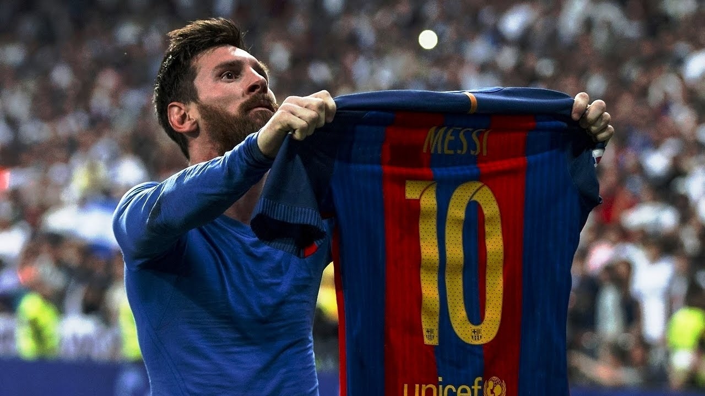
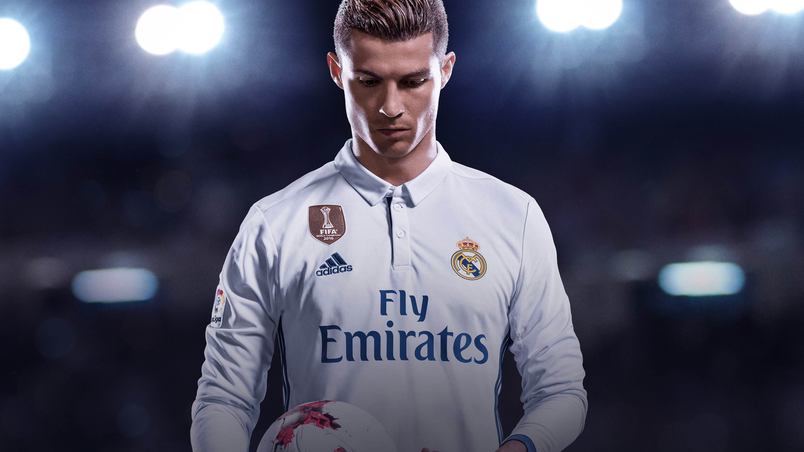
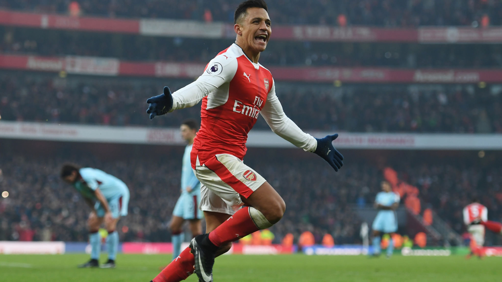
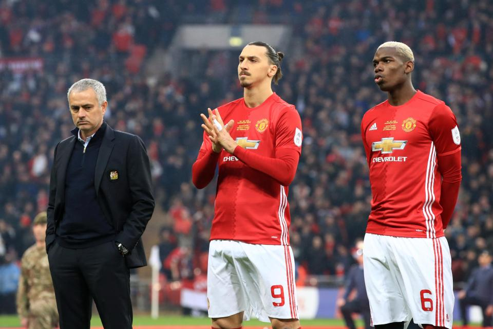
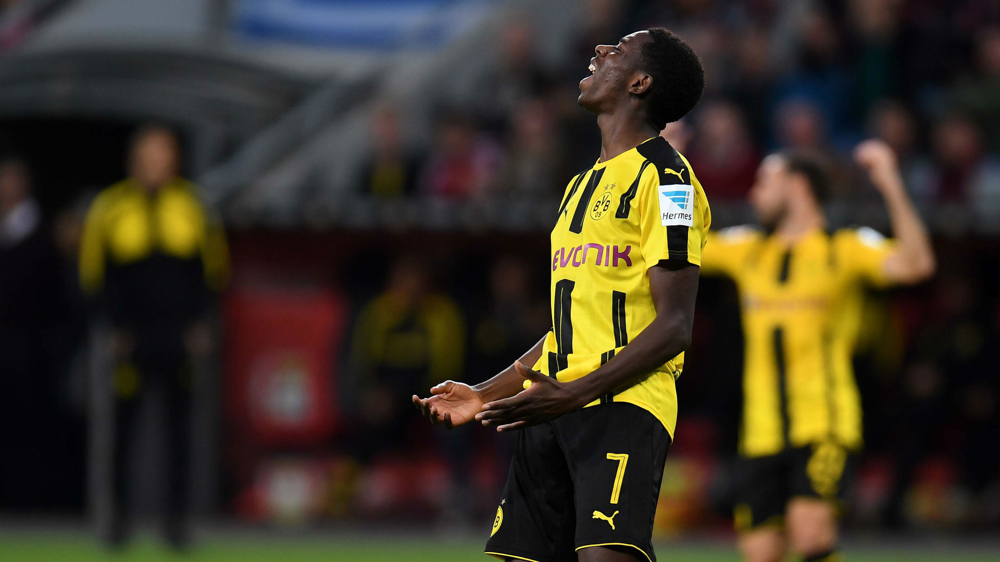
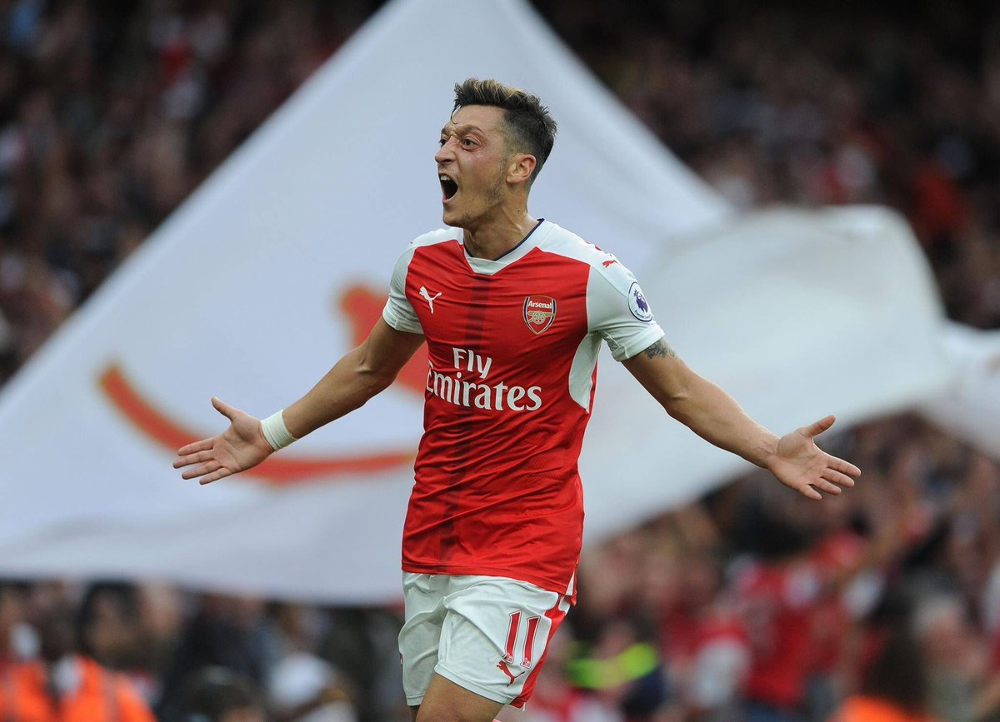
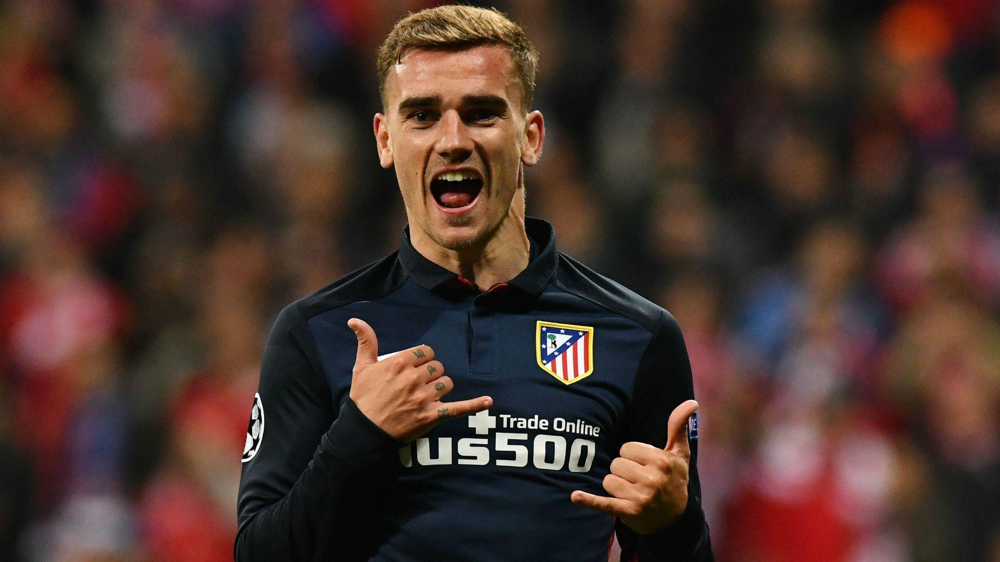

Barcelona vs Espanyol
Football Club Barcelona crushed city rival Espanyol 6-0 . Messi scored the first three goals, with Pique adding the fourth and Luis Suarez the fifth.
Cristiano Ronaldo scoring crises
Cristiano Ronaldo has scored just one goal in 48 La Liga shots for Real Madrid this season as ex-Manchester United man’s frustrations grow. As Sergio Ramos explained after the match: "If he doesn't score, he goes home in a bad mood." So, for the fourth league game in a row, the Portuguese superstar is not best pleased — and he didn't even try to hide it. Despite Los Blancos winning to just about stay in touch with Barcelona, the ex-Manchester United man once again failed to find the back of the net. At full-time, the cameras even caught Jesus Vallejo telling him: "It will go in, we're nearly there. You'll get one. Patience."
Arsenal vs Tottenham
Tottenham Hotspur were never at the races in a match that was nevertheless settled by two contentious goals. The first, a free header from a fractionally offside Shkodran Mustafi, came from a free-kick that should never have been awarded for a Davinson Sanchez “foul” on namesake Alexis. It was Arsenal’s Sanchez who provided the second one, taking advantage of some questionable goalkeeping to smash the ball into the roof of the net from a tight angle after being teed up by Alexandre Lacazette. Sanchez too looked fractionally offside as he ran on to Lacazette’s pass. But make no mistake - Tottenham were weirdly awful today and deserved to lose.
Lions Don't Recover Like Humans- Zlatan
Jose Mourinho has been given a huge boost with Paul Pogba, Zlatan Ibrahimovic and Marcos Rojo available again after long injury lay-offs. The trio have been included in Manchester United’s squad to face Newcastle at Old Trafford on Saturday evening . Ibrahimovic and Rojo are back after being sidelined for seven months with cruciate knee ligament injuries and Pogba has missed United’s past 12 matches after suffering a tear to his left hamstring against Basel in the Champions League on Sept. 12.
DEMBELE ON COURSE FOR CLASICO AS BARCELONA'S €105M MAN RAMPS UP RECOVERY
The France international is nursing his way back from a hamstring injury and could figure in a meeting with Real Madrid prior to the winter break Ousmane Dembele remains on course to make his comeback for Barcelona ahead of December's Clasico clash with Real Madrid. The France international has been out of action since suffering a hamstring tear against Getafe on September 16.
ARSENAL's TRANSFER NEWS
THE LATEST & LIVE PLAYER RUMOURS FROM THE EMIRATES STADIUM Goal summarises the biggest transfer talk involving Arsenal as they continue the fight to hold on to Mesut Ozil and Alexis Sanchez
GRIEZMANN NEEDS SUPPORT OF ATLETICO AND FANS – SIMEONE
The Atletico Madrid boss rallied behind his under-fire forward, who has not scored a club goal since September 27 Diego Simeone said out-of-form star Antoine Griezmann needs the support of Atletico Madrid and their fans amid his eight-game streak without a goal. Griezmann was jeered by his own supporters as he fired another blank in Atletico's scoreless stalemate against city rivals and La Liga champions Real Madrid last week. Linked with a big-money move to Manchester United in the off-season, Griezmann has not scored since September 27, while he has only tallied three goals in all competitions this term – two of those in 10 La Liga appearances.